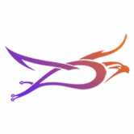 LineSmart.io LINESMART 是全球去中心化生态系统的国际社区，也是 Tron 网络的第一个智能合约营销矩阵。这是一种自动执行的软件算法，执行在社区成员之间分配合作伙伴奖励的功能
LINK MINER FINANCE 什么是 LINK 矿工？当我的桶装满时会发生什么？我可以取回最初的存款吗？矿工工作多长时间？费用是多少？推荐如何运作？ LINK Miner 的可持续性如何？ LINK Miner 是一个基
LinkSwap LINKSWAP 平台具有独特的功能，旨在解决我们这个时代第二代 AMM 面临的痛点——无论是对于 LINK 持有者，还是对于整个 DeFi 社区。一些主要功能包括 SlipLock，它
Lino Finance 我们相信 BSC 生态系统的力量并相信我们的社区。我们将从 bsc 代币开始，并继续作为 de-fi 平台。加入我们并保持安全！ Lino 在金融词典中的定义——由免费的在线英语
LocalCryptos LocalEthereum 是人们点对点交换 ETH 和其他加密货币的方式。 黑客每年从中心化交易所窃取数十亿美元。几乎每周都会发生新的百万美元抢劫案。 非托管平台不受这些威胁的
Mars Ecosystem 火星生态系统通过将稳定币的创建和使用整合到一个稳定但去中心化的生态系统中来解决这个问题。 Mars Stablecoin 与 Mars DeFi 平台之间的关系创建了一个正反馈循环并产生了
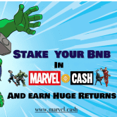 MARVEL CASH MARVEL.CASH 是建立在币安智能链上的去中心化应用程序。游戏的目的是雇佣您最喜欢的 MARVEL HEROES，从而帮助您赚取更多 BNB。这些漫威英雄将为您不知疲倦地工
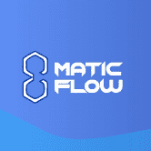 Matic Flow 什么是 Matic 流？ Matic Flow 是基于多边形网络的增强型混合 ROI Dapp。我们选择在 Polygon Network 上建立 Stable One 的主要原因有 3 个：- 🌊交易费用更便宜 🌊受众更多 🌊更成熟的投资
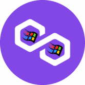 MATIC Miner.exe MATICMiner.exe 是一个高利润的矿工，每天奖励 10% 给用户。投资者还可以通过邀请朋友享受10%的推荐费。 Win95.finance 是一个基于 Windows 95 UI 主题的一体化多链 dApps & DeFi 生态系统。专为蒸
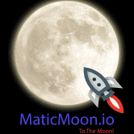 Matic Moon 特征 MaticMoon 是为 Polygon 社区开发的高收益投资计划。该合约旨在奖励社区，尤其是在加密空间正经历剧烈市场波动的时候。 这是将 MATIC 投入收益回报并获得良好投资回报率
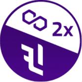 MaticDoubler Maticdoubler.com - 是 Polygon 网络上一款新的最可持续的高收益游戏。质押 MATIC 并在 MATIC 中赚取高达 40% 的每日收入，并随时即时提取资金！ 【投资条件】 5 天每天 40% 的投资回报率 最低存
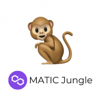 MaticJungle MATIC Jungle 适用于想要长期利润和可持续性的用户。对于那些想要立即获利的人来说，最终会影响他人。 MATIC 丛林不要与农场混淆。矿工不是被购买的，而是被雇佣的，
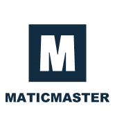 MaticMaster 10% 利润每日反鲸功能 每 24 小时获得 10%，持续 21 天。奖励基于您每天的活跃存款，总计 210%！ 每天提款一次，一次最多提现 10,000 MATIC！当余额下降警
Matrix Farm 什么是矩阵？ 1.Matrix 是一个农场聚合器，可帮助用户简化他们在 Fantom 庞大生态系统中的体验。事实上，作为一个农场聚合器，Matrix 允许用户轻松地将他们的 FTM
Matter DeFi Matter DeFi 是一个先进的单产农业平台，旨在为 Tezos 用户提供长期可持续的农业机会。 Matter DeFi 的旗舰功能是 $MTTR 代币的合约级别自动回购和销毁。平台产生的所有费用都会在
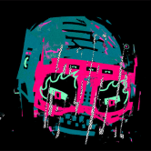 MAX PAIN AND FRENS BY XCOPY Max Pain and Frens 是OG NFT 艺术家 @XCOPYART 在 Nifty Gateway 上推出的多件艺术品的集合。下降包括公开版、两次排名拍卖、一幅绘画和两个级别的刻录以赎回艺术品。开放版作品名为“
Maximus Maximus 是 Avalanche 的新一代产量农业聚合器和优化器！ Maximus 以其独特的功能为 Avalanche 生态系统带来了新的气息，并将通过一种新的代币架构为整个生态系统提供最有利可图的金融
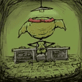 mcgoblin.wtf Mcgoblin.wtf 是原始 Goblintown.wtf NFT 项目的配套项目。 虽然包含有限的信息，但麦哥布林网站描绘了麦哥布林汉堡餐厅，其标志与麦当劳相似。 只需一个交互按钮，用户就可以点击“
MeanFi 平均社区 官方平均 DAO 社区链接 Mean DAO 社区在 https://discord.meanfi.com 上的 Discord 上运行。 您也可以在 Twitter 上与我们一起在 https://twitter.com/meanfinance 资金流 资金流代表了随着时间的推移持续支付的想法。区块编号用于
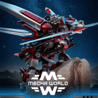 Mecha World 一款关于在 WAX 区块链上建造、探索和与机甲动物战斗的后世界末日 NFT 游戏。 Mechas 是您的基础 NFT。在发布时，将有 36 种基于 Canine 体型和颜色的不同外观。您的机甲
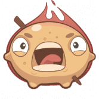 Medium Rare Potato Medium Rare Potato 是一款关于区块链上的食物、饮料和餐厅业务的 NFT 游戏。选择一家餐厅或一个角色，创建自己的菜单，烹饪来自世界各地不同美食的菜肴并参与烹饪大战
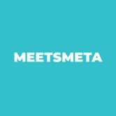 MeetsMeta Scholarship Dapp MeetsMeta Scholarship dApp 是一个平台，它让游戏社区能够分散 NFT 持有者和游戏玩家之间的互动，安全地为持有者提供被动收入，同时增加游戏玩家的收入和收益。 持有者可以根据
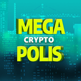 MegaCryptoPolis 多区块链城市建设者策略游戏 - 一款突破性的 MMO，让来自世界各地的玩家能够以前所未有的方式共同建设一个独特的特大城市。 MegaCryptoPolis 中的每一项资产都是存储
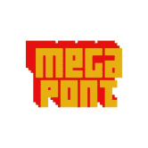 Megapont Megapont 是一个虚构的宇宙，其中先进的科学突变加速了地球上每个物种的进化。地球目前是一个繁荣、繁华的天堂，世代相安无事。 Megapont Ape Club 是对 Megapont 世界中风景优美的
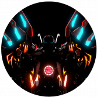 MekaRim 成为你的 NFT 您独特的 NFT 将是您在游戏中的可玩角色，该游戏将于 2022 年第三季度推出，并且已经开发了六个月。 玩赚 Meka Rim 将使用游戏即赚钱机制，允许玩家在玩游
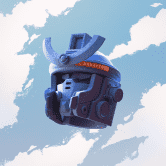 MekaVerse MekaVerse 是受日本动漫世界启发的 8,888 个生成 Mekas 的集合。 在遥远的未来，车手们在一个分为 4 个阵营的世界中战斗。 Originals Meka、Mirage、F9 和 Gadians 是统治这个星
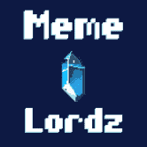 Meme Lordz Meme Lordz 是一款 100 多小时的区块链游戏，由币安智能链网络提供支持。探索怀旧的、自上而下的 Memnon 开放世界，并利用游戏内铸币将每个 Meme Lord 永生化为不可替代代币 (
Mercor Finance Mercor 是第一个也是唯一一个提供算法复制交易的 DeFi 平台。 Mercor 平台允许您直接投资由领先的对冲基金、才华横溢的开发人员和加密爱好者创建的算法。 Mercor 是第一个也
Mercurial Mercurial 正在建立新的流动性系统，以最大限度地提高 Solana 上稳定资产的效用和收益。 我们为 Solana 带来的一些创新： 动态保险库 动态做市库以最大限度地利用资本 交换池 与
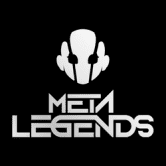 Meta Legends Meta Legends 代表 12345 个图例的集合，按稀有程度分类，并由数百个元素生成。 Legends 作为 ERC-721 代币存储在以太坊区块链上并托管在 IPFS 上。我们的目标是创建一个完整的生态系统
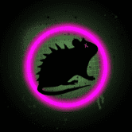 Meta Mice Underground 什么是 Meta Mice Underground ？ Meta Mice Underground 是 4,000 个手绘/生成的 NFT 的集合，它们位于以太坊区块链上，为持有者提供大量实用程序。创始人来自美国，并且完全被人盯上了。每个 MMU
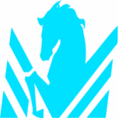 MetaDerby MetaDerby 是一个通过游戏赚取的 NFT 赛马虚拟世界，玩家可以通过 Avalanche 上的免费游戏功能赚取代币和真钱。在 MetaDerby 中，玩家可以参与赛马、马匹繁殖、购买土地和在土地上建
METAFISH MetaFish 是 BSC 上第一个推荐游戏赚取 Metaverse NFT 游戏，其灵感来自名为 Play Together 的流行游戏，在该游戏中，用户扮演渔民的角色，他们的钓竿作为有价值和可销售的 NFT 资产. Me
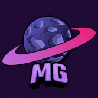 Metagalactics Play2earn 基于 WAX 区块链的战略游戏，其中每一块空间、每一项游戏内资产都真正归玩家所有。在这里您可以尝试自己的原创策略、成长、战斗和赚钱！你所做的每一个
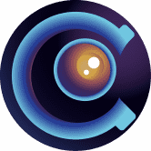 Metagame Arena Prometheus 的 NFT 分为三个主要系列：日本、希腊和北欧。我们将发布的第一个 NFT 系列是日本派系的 NFT 合集。 未来我们将基于我们的神卡和战斗卡制作一个全面的 NFT 战利品
Metaguardians 成为守护者来保护虚拟世界！还是你会成为恶棍？ Metaguardians 是一个不断扩展的超级英雄世界，包含视频游戏和虚拟宇宙收藏品（以太坊上的 ERC-721 NFT）。新系列每 7 周

，专注于为强大的 LINK hodlers 社区提供安全和价值捕获。")